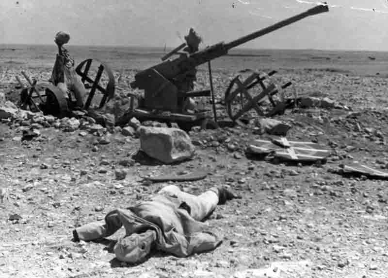

Principais Batalhas da Segunda Guerra Mundial
A Segunda Guerra Mundial foi marcada por inúmeras batalhas significativas que mudaram o curso da história. Aqui estão algumas das mais importantes:
1. Batalha de Stalingrado
A Batalha de Stalingrado ocorreu entre 17 de julho de 1942 e 2 de fevereiro de 1943. Foi uma das batalhas mais sangrentas da história, resultando na vitória soviética contra as forças alemãs.
2. Desembarque da Normandia (Dia D)
O Desembarque da Normandia, também conhecido como Dia D, ocorreu em 6 de junho de 1944. Foi uma das maiores operações anfíbias da história, levando à libertação da França ocupada pelos nazistas.
3. Batalha de Midway
A Batalha de Midway, travada entre 4 e 7 de junho de 1942, foi um ponto de virada no Pacífico. As forças americanas conseguiram uma vitória decisiva contra a marinha japonesa.
4. Batalha de El Alamein
A Batalha de El Alamein, ocorrida entre 23 de outubro e 11 de novembro de 1942, foi uma vitória crucial para os Aliados no Norte da África, impedindo o avanço das forças do Eixo.
5. Batalha de Kursk
A Batalha de Kursk, travada entre 5 de julho e 23 de agosto de 1943, foi a maior batalha de tanques da história e resultou em uma vitória decisiva para os soviéticos contra as forças alemãs.